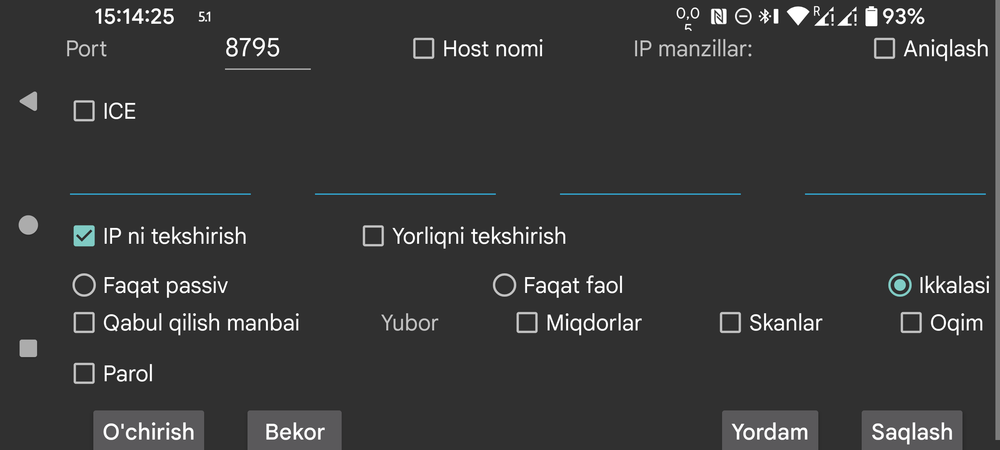

ar be de es fr hi it nl pl pt ru sv tr uk uz zh en
Bu sahifada boshqa Juggluco nusxasi bilan ulanishingiz belgilanadi. Bir qurilmadagi Juggluco IP/TCP orqali boshqa qurilmadagi Juggluco ga ma’lumot yuboradi. Ulanish ishlashi uchun nusxalardan biri tarmoq portida tinglashi, ikkinchisi esa o‘sha portga murojaat qilishi kerak.
Oldingi ekranda, ya’ni chap o‘rta menyu→Mirror bo‘limida, ushbu qurilma tinglaydigan port ko‘rsatilgan. Bu sahifada esa ushbu Juggluco faol bog‘lanish boshlaganda qaysi portga ulanishini ko‘rsatasiz.
Agar ushbu Juggluco portda tinglay olmasa, Faqat faol ni tanlang. Agar qarshi tomon tinglay olmasa, Faqat passiv ni tanlang. Aks holda Ikkalasi belgilanganicha qolsin. Qarshi tomondagi Juggluco da buning teskarisi ko‘rsatilishi kerak: bu yerda Faqat faol tanlansa, u yerda Faqat passiv; bu yerda Faqat passiv tanlansa, u yerda Faqat faol; bu yerda Ikkalasi tanlansa, u yerda ham Ikkalasi.
Agar ushbu nusxa faol ravishda ulansa, u ulanishi kerak bo‘lgan IP manzil(lar)ni kiritish kerak. Bitta xostda bir nechta IP bo‘lishi mumkin, masalan qurilmalar ba’zan uy tarmog‘i orqali, ba’zan esa ko‘chma hotspot orqali bog‘lanadigan bo‘lsa.
Ogohlantirish: bir nechta turli qurilmalarning IP manzillarini bitta ulanishga kiritmang. Aks holda ularning har biri ma’lumotning faqat bir qismini oladi.
Host nomi: IP manzillar o‘rniga bitta xost nomini ko‘rsatish mumkin. Bu ulanishni nameserver ga bog‘lab qo‘yadi, shuning uchun sekinroq bo‘ladi va nameserver uzilishi ta’sir qiladi. Odatda buni faqat statik IP sozlab bo‘lmaganda va dinamik IP ga host nomi avtomatik bog‘langan bo‘lsa ishlatish kerak.
Aniqlash funksiyasi Faqat faol dan tashqari barcha rejimlarda mavjud. Bu holatda Juggluco birinchi bo‘lib murojaat qilgan IP ni qarshi tomonning IP manzili sifatida saqlaydi. To‘g‘ri qurilma bog‘lanayotganini ikki usul bilan tekshirish mumkin: IP ni tekshirish IP ni sinaydi; Yorliqni tekshirish esa faqat ikkala tomonda bir xil yorliq berilgan bo‘lsa ulanishga ruxsat beradi.
Agar bu ilova mirror, ya’ni ma’lumot qabul qiluvchi nusxa bo‘lishi kerak bo‘lsa, Qabul qilish ni tanlang.
Agar bu qurilma yuboruvchi bo‘lsa, qaysi turdagi ma’lumot yuborilishini ko‘rsatish kerak:
Ba’zan qabul qiluvchi qurilmada ma’lumotning bir qismi allaqachon mavjud bo‘ladi. Shuning uchun shu ma’lumot qaysi vaqtgacha mavjudligini ko‘rsatasiz:
Agar mavjud ulanishga yangi ma’lumot manbai qo‘shilsa, boshlanish sanasi faqat yangi qo‘shilgan manba uchun qo‘llanadi. Masalan, Skanlar va Oqim allaqachon xostga yuborilgan bo‘lsa, keyin Miqdorlar qo‘shilganda, boshlanish sanasi faqat Miqdorlar uchun amal qiladi.
Agar ikki qurilma xavfsiz bo‘lmagan tarmoq orqali ulanayotgan bo‘lsa, ma’lumotlar ikkala tomonda bir xil, eng ko‘pi 16 belgili parol kiritish orqali imzolanishi va shifrlanishi mumkin.
Saqlash kiritilgan sozlamalarni saqlaydi. O‘chirish esa shu ulanish tavsifini o‘chiradi.
QR: qarshi tomondagi ulanishni QR kodni skan qilib yaratishga yordam beradi.
Eng oddiy holatda barcha ulanishlar uy tarmog‘ingizga tegishli bo‘ladi, shuning uchun mahalliy IP manzillar yetarli bo‘ladi. Internet orqali Wi‑Fi bilan ulanmoqchi bo‘lsangiz, modem yoki router qo‘llanmasidan tashqi portni ichki IP va portga yo‘naltirishni ko‘rish kerak bo‘ladi.
Mobil internet orqali Internet ustidan ulangan ikki smartfon ham to‘g‘ridan-to‘g‘ri bir-biri bilan bog‘lana oladi, agar ulardan biri tarmoq portida tinglay olsa. Agar ikkalasi ham tinglay olmasa, masalan ikkalasida ham alohida IP bo‘lmasa, ular uchinchi qurilma orqali aloqa qilishi mumkin. Variantlardan biri — uyda modemga ulangan Android qurilmada Juggluco ishlatish. Yana bir variant — kompyuterda yoki serverda Juggluco ning buyruq satri dasturini ishlatish: https://www.juggluco.nl/Juggluco/cmdline/index.html.
Port yo‘naltirish bo‘yicha tushuntirishlar:
https://portforward.com/how-to-port-forward/
https://stevessmarthomeguide.com/understanding-port-forwarding/
NFC bo‘lmagan qurilmada ham Bluetooth orqali glyukoza olish mumkin. Buning uchun sensor avval NFC li qurilmada ishga tushiriladi, keyin Skanlar va Oqim ma’lumotlari NFC siz qurilmaga yuboriladi. Shundan keyin Oqim yo‘nalishini teskarisiga o‘zgartirib, NFC li qurilmada Bluetooth ni o‘chirib, NFC siz qurilmada yoqish kerak bo‘ladi; shuningdek NFC li qurilmada Bluetooth orqali sensor ni o‘chirib, ikkinchisida yoqish kerak bo‘ladi. Shunda bitta qurilma bilan skan qilib, boshqa qurilmada Bluetooth oqimini qabul qilish mumkin bo‘ladi. Lekin barcha qurilmalarda sensor ma’lumoti to‘liq bo‘lishi kerak: qurilmalar o‘zaro ma’lumot almashganda ular har doim ham Skanlarni, ham Oqimni qabul qilishi kerak. Aks holda ma’lumotlar mos kelmay qoladi, eski autentifikatsiya ma’lumotlari ishlatiladi yoki yangi ma’lumot ustiga eski ma’lumot yozilib ketadi.
Miqdorlar ma’lumoti esa bundan mustaqil.
Ulanish yaratishning boshqa usuli — ICE (Interactive Connectivity Establishment). Bu usul port yo‘naltirishsiz ikki Juggluco nusxasi o‘rtasida aloqa o‘rnatishga yordam beradi. Ko‘p hollarda ikki telefon serverlarsiz to‘g‘ridan-to‘g‘ri ulanadi. Ba’zi hollarda esa TURN server kerak bo‘ladi; uni chap o‘rta menyu→Mirror→TURN server bo‘limida ko‘rsatish mumkin.
Ba’zi vaziyatlarda serverlar faqat ikki telefonni bir-biri bilan tanishtirish uchun kerak bo‘ladi. Buning uchun ikkala tomonda ham bir xil bo‘ladigan, ammo boshqa Juggluco foydalanuvchilarida ishlatilmaydigan ICE yorlig‘i beriladi. Ulanishning bir tomoni 0, ikkinchi tomoni esa 1 ni ko‘rsatishi kerak. Shuningdek ikkala tomonda umumiy yorliq ham bo‘lishi kerak, lekin u faqat shu telefonlar ichida noyob bo‘lsa kifoya. Bularning barchasini qo‘lda kiritish o‘rniga chap o‘rta menyu→Mirror→AutoQR orqali ulanishni avtomatik yaratib, ikkinchi telefonda QR kodni skan qilish ham mumkin.
Ikkala tomondagi sozlamalar bir-biriga qat’iy mos bo‘lishi kerak. Juda kichik o‘tkazib yuborish ham ma’lumot uzatilishini butunlay to‘xtatishi mumkin.
Ba’zan ulanish osilib qoladi va Wi‑Fi ni o‘chirib-yoqish yoki Sinx tugmasini bosish bilan qayta tiklash kerak bo‘ladi. Ayrim hollarda faqat faol–faqat passiv ulanishini ikkalasi ga almashtirish, yoki aksincha, yordam beradi.
IP manzillar ulanish turiga qarab o‘zgarishi ham mumkinligini yodda tuting. Masalan, uy tarmog‘ida ishlatiladigan IP lar portativ hotspot orqali ishlatiladigan IPlardan boshqacha bo‘ladi.